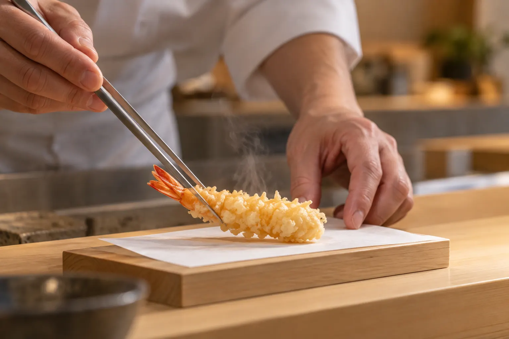
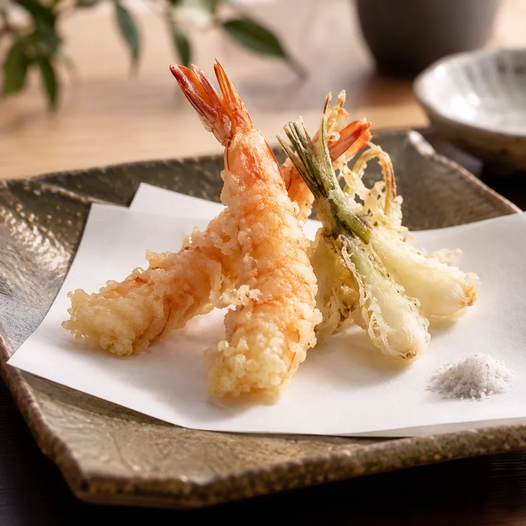
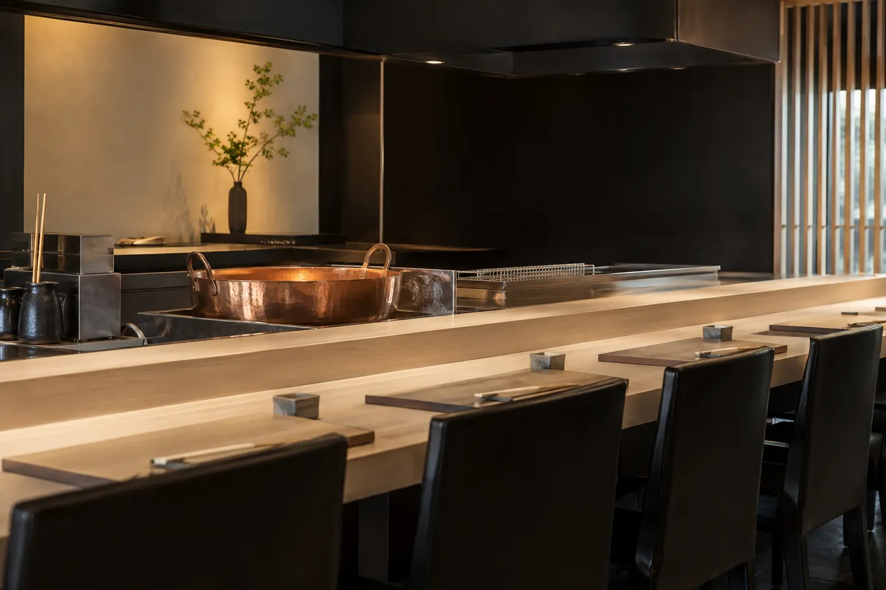
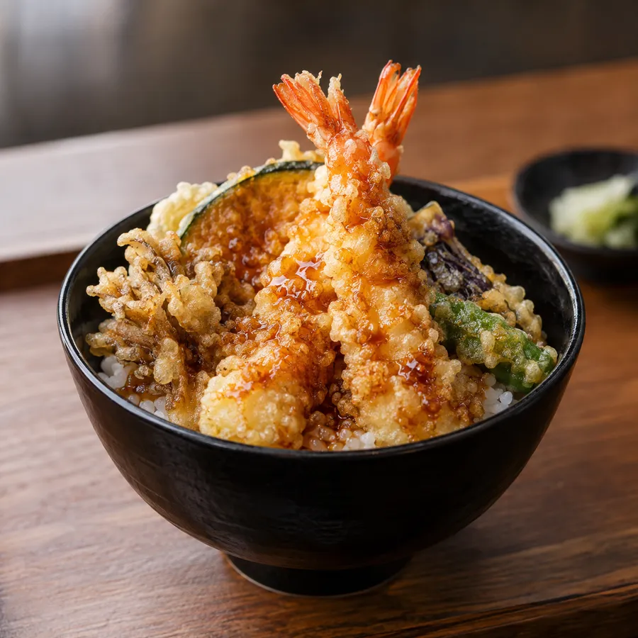

Freshly fried, one piece at a time.
Reservations only ・ Tempura
Tempura served piece by piece at a white-cedar counter, in a light batter fried in sesame and pure oils.
Concept
Noto kuruma prawns, Kaga lotus root, kinjiso greens. We change the oil temperature for each ingredient, frying a thin batter over a tender, juicy center.
Try the first piece with salt and the next with tentsuyu. Our chef will guide you to your favorite way.
Tempura Geppaku

Menu
Prices include tax, per person. Two seatings (17:30 / 20:00).
Interior
A quiet space in nothing but white and black awaits you.


Information
Reservations
Reservations only. Book by phone, LINE or online.